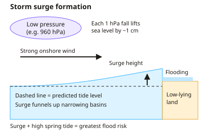

A-level Geography Year 12 · Topic 6
Coastal risk, management and case studies
Coastal risk, management and case studies examines the growing threats to coasts and how they are managed.
We will study coastal flooding, storm surges and erosion, and the impacts of sea level rise.
Then we evaluate shoreline management plans, integrated coastal management, and a detailed coastal case study.
- 4 subtopics
- 165 questions
- Free: 6.1 notes and 10 questions
In this topic
- 6.1Coastal flooding, storm surges and erosion hazardsFree below · 36 questions
- 6.2Climate change, sea level rise and impacts on coastal communitiesOpen in Full Marks · 70 questions
- 6.3Shoreline management plans, integrated coastal zone management and cost-benefit analysisOpen in Full Marks · 27 questions
- 6.4Coastal case study: processes, landforms, management and stakeholder conflictOpen in Full Marks · 32 questions
6.1 · Free notes
Coastal flooding, storm surges and erosion hazards

Key points
- Coastal flooding is inundation of low-lying land by the sea. It is caused by storm surges, high spring tides, wave overtopping, tsunamis, or compound flooding (a surge combined with high river discharge).
- A storm surge is a temporary rise in sea level above the predicted tide. It is caused by low atmospheric pressure (about 1 cm rise per 1 hPa fall) and strong onshore winds that pile water against the coast.
- Surge height is greatest when it coincides with a high spring tide, in shallow, funnel-shaped basins such as the southern North Sea, and on coasts with a long fetch.
- Case study: the 1953 North Sea flood killed over 300 people in eastern England and over 1,800 in the Netherlands. It led to the Thames Barrier (operational 1982), the Dutch Delta Works and national flood warning systems.
- Risk = hazard × vulnerability ÷ capacity to cope. Vulnerability rises with low elevation, dense population, poverty and lack of warning. Bangladesh shows this: Bhola 1970 killed over 300,000, Cyclone Sidr 2007 about 3,400, helped by shelters and warnings.
- Return period is the average interval between events of a given size. A 1-in-100-year flood has a 1% (0.01) chance in any year; it does not mean exactly once per century.
- Marine erosion processes are hydraulic action, abrasion (corrasion), attrition (wear of the load itself) and solution. Sub-aerial processes (weathering and mass movement) also cause retreat: rockfall on chalk, rotational slumping on saturated clay.
- Erosion rate depends on wave energy (fetch), geology (lithology, dip, jointing), beach width, cliff height and human activity. Holderness boulder clay retreats about 1.8 m per year on average, among the fastest in Europe; Happisburgh (Norfolk) has lost homes.
- Defences can disrupt the sediment budget: groynes or rock armour starve downdrift coasts (terminal groyne syndrome), e.g. Mappleton protected but Cowden eroded faster.
- Fieldwork: beach profiles (ranging poles, clinometer, tape, repeated from a fixed benchmark), cliff-top retreat measured from fixed points, and pebble roundness (Powers index). Rate (m/yr) = distance ÷ time. Limitations: tides, weather, small samples and safety.
- Monitoring uses repeated aerial photographs, LiDAR and GPS surveys to quantify retreat and flood-risk change, which feed risk maps and management decisions.
In more detail
- The 1953 North Sea flood: 307 people died in England and about 1800 in the Netherlands, after a storm surge struck during a high spring tide.
- How surges build: sea level rises about 1 cm for every 1 millibar fall in pressure; strong winds pile water up, and the narrowing southern North Sea funnels it.
- December 2013 surge: the largest in places since 1953; about 1400 homes flooded, but defences including the Thames Barrier protected about 800 000.
- Return periods: a "1-in-200-year" flood has a 0.5% chance of happening in any given year.
- Erosion hotspots: at Hemsby in Norfolk, storms in 2018 and 2023 left clifftop homes collapsing and needing demolition.
Practice
Coastal flooding, storm surges and erosion hazards: 10 questions
Pick an answer to check it, or open the answer for the explanation.
1. Which combination best explains a storm surge on the UK east coast?
- Prolonged heavy rain raising river discharge into the estuary
- An undersea earthquake displacing a large volume of seawater
- High pressure pressing the sea down and offshore winds pushing water away
- Low pressure raising sea level plus strong onshore winds piling up water
Show answer
D: Low pressure raising sea level plus strong onshore winds piling up water. A surge is a short-term sea-level rise above the predicted tide caused by low pressure and onshore winds. Tsunamis are tectonic and river flooding is a separate process.
2. Pressure over the North Sea falls from 1013 hPa to 963 hPa. Using about 1 cm rise per 1 hPa fall, the pressure-driven rise in sea level is roughly:
- 50 m
- 5 m
- 5 cm
- 50 cm
Show answer
D: 50 cm. A fall of 50 hPa × 1 cm per hPa gives about 50 cm. Wind set-up adds further height, so total surge can reach 2–3 m.
3. A coastal town's hazard level is unchanged, but more people move onto low-lying land and the warning system is removed. Using risk = hazard × vulnerability ÷ capacity to cope, risk will:
- Stay the same because the hazard is unchanged
- Fall because the risk is shared among more people
- Increase because vulnerability rises and capacity to cope falls
- Fall because capacity to cope depends on population size
Show answer
C: Increase because vulnerability rises and capacity to cope falls. More exposed people raise vulnerability and losing warnings reduces capacity to cope, so risk increases even if the physical hazard is the same.
4. A 1-in-200-year storm surge has what probability of occurring in any given year?
- 2%
- 5%
- 0.5%
- 0.2%
Show answer
C: 0.5%. Annual probability = 1 ÷ 200 = 0.005 = 0.5%. It could happen in consecutive years; return period is only an average.
5. A cliff top is 24 m from a road. Retreat has averaged 0.8 m per year. If the rate stays constant, how long until the road is reached?
- 192 years
- 19 years
- 30 years
- 40 years
Show answer
C: 30 years. Time = distance ÷ rate = 24 m ÷ 0.8 m/yr = 30 years. Multiplying instead of dividing gives the wrong answer of 19.2.
6. Why are the boulder clay cliffs of Holderness among the fastest-eroding in Europe?
- Resistant chalk is dissolved quickly by acidic seawater
- Longshore drift deposits too much sediment at the cliff base
- Weak, unconsolidated clay is exposed to waves with a long fetch
- Tectonic uplift is raising the cliffs rapidly
Show answer
C: Weak, unconsolidated clay is exposed to waves with a long fetch. Boulder clay is soft and easily slumps or washes away, and the North Sea fetch gives high wave energy. Narrow beaches give little protection.
7. Rock groynes built at Mappleton (Holderness) in 1991 had which consequence?
- Erosion stopped along the whole Holderness coast
- Beach material built up downdrift at Cowden
- Erosion increased downdrift at Cowden as sediment supply was cut
- The cliff at Mappleton retreated faster than before
Show answer
C: Erosion increased downdrift at Cowden as sediment supply was cut. Groynes trap sediment updrift, starving downdrift coasts of beach material, so erosion at Cowden accelerated (terminal groyne syndrome).
8. Which is a sub-aerial process contributing to cliff retreat?
- Rotational slumping of saturated clay
- Hydraulic action
- Attrition of pebbles
- Abrasion by beach pebbles
Show answer
A: Rotational slumping of saturated clay. Sub-aerial processes act on the cliff face from land: weathering and mass movement such as slumping. The others are marine processes or affect only the load.
9. The 1953 North Sea flood caused heavy loss of life mainly because:
- A large storm surge coincided with a spring high tide in a funnel-shaped sea
- Rivers flooded after weeks of heavy rain
- A neap tide delayed the warnings
- A tsunami struck the coast at high tide
Show answer
A: A large storm surge coincided with a spring high tide in a funnel-shaped sea. A northerly storm surge funnelled into the narrowing southern North Sea on a spring tide, overtopping defences. This led to the Thames Barrier.
10. Why were deaths far fewer in Bangladesh's Cyclone Sidr (2007) than Bhola (1970)?
- The delta has risen well above sea level since 1970
- Early warnings, evacuation and cyclone shelters increased capacity to cope
- A Thames-style barrier now seals the Bay of Bengal
- Sidr struck an uninhabited part of the coast
Show answer
B: Early warnings, evacuation and cyclone shelters increased capacity to cope. Bangladesh invested in forecasting, community warning and shelters, reducing vulnerability. The coast remains low-lying and populated.
Keep going in Full Marks
Full Marks has 36 questions on Coastal flooding, storm surges and erosion hazards (26 more than here), set out in practice levels. You also get notes and 3D models for all 4 subtopics of Coastal risk, management and case studies, plus games, timed exams and past papers.